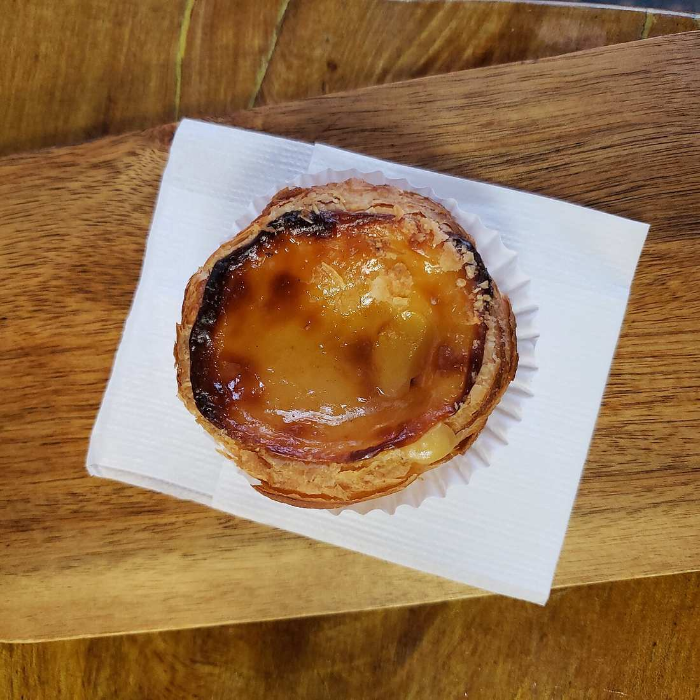
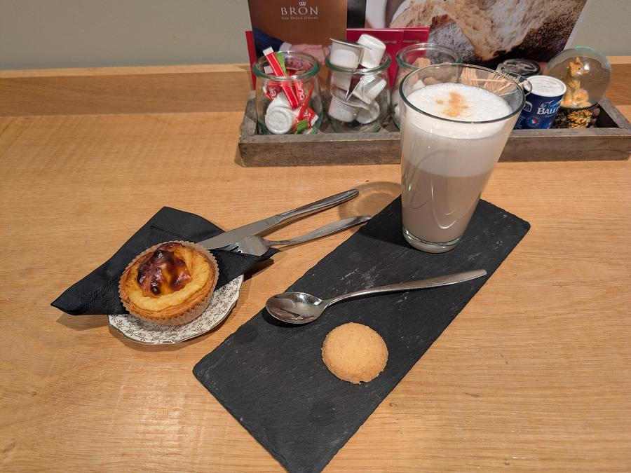

Portuguese café · Acton W3
A taste of Portugal on Churchfield Road.
From a morning coffee and pastel de nata to grilled sea bream and a proper bitoque at dinner, Vilamoura serves authentic Portuguese food in a homely, friendly setting, with generous portions and fair prices.


Breakfast, lunch & dinner, à portuguesa
Vilamoura is a small, welcoming café-restaurant with a real community feel, where you’ll often hear Portuguese spoken and might catch the football on a Saturday night. Come for breakfast, a quick weekday lunch or a relaxed evening meal.
Finish with a coffee and a pastel de nata before you go.
Visit us
134–136 Churchfield RoadActon, London W3 6BS
| Monday | 8am–10pm |
|---|---|
| Tuesday | 8am–10pm |
| Wednesday | 8am–10pm |
| Thursday | 8am–10pm |
| Friday | 8am–10pm |
| Saturday | 9am–10pm |
| Sunday | 9:30am–6pm |
Open seven days a week